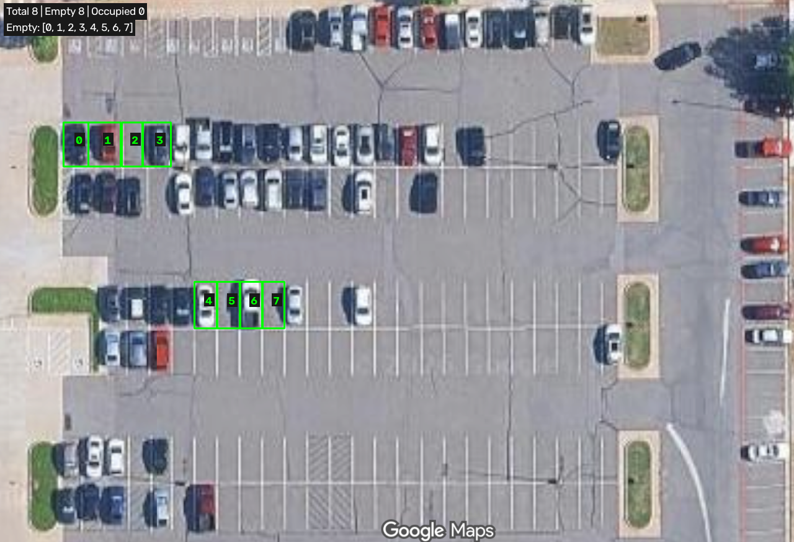
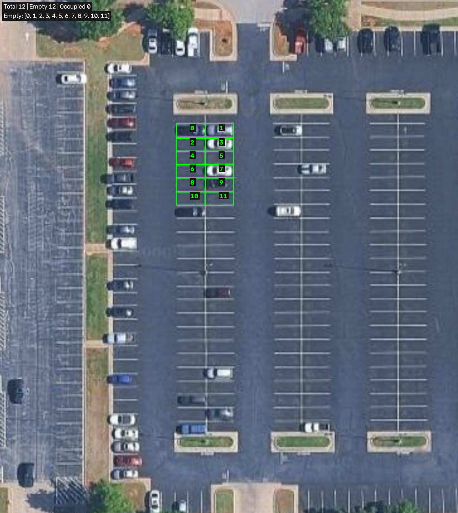
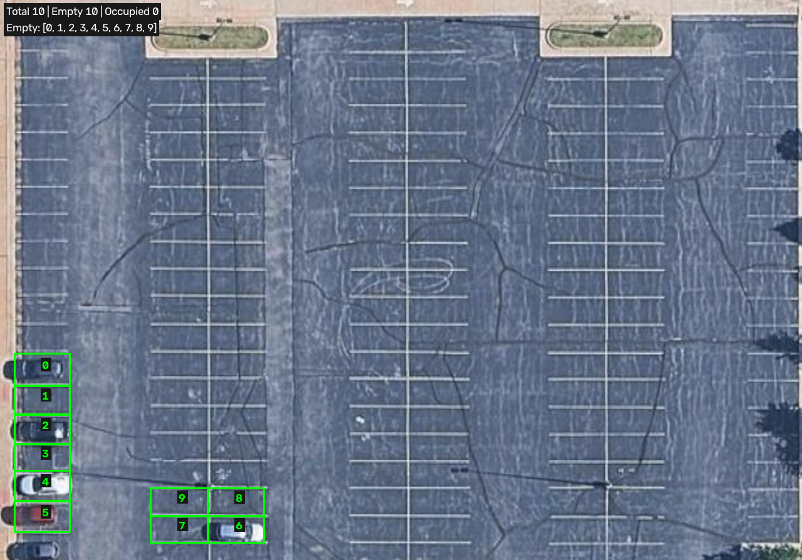
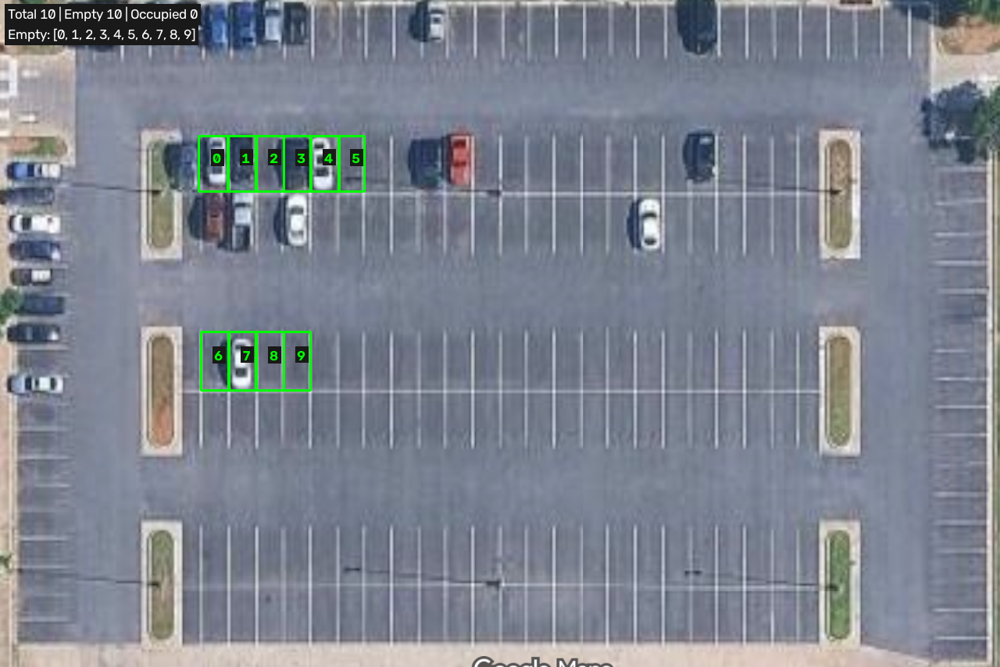
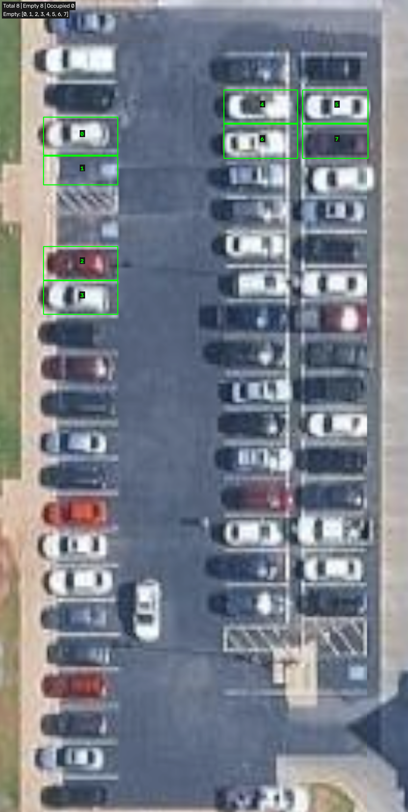
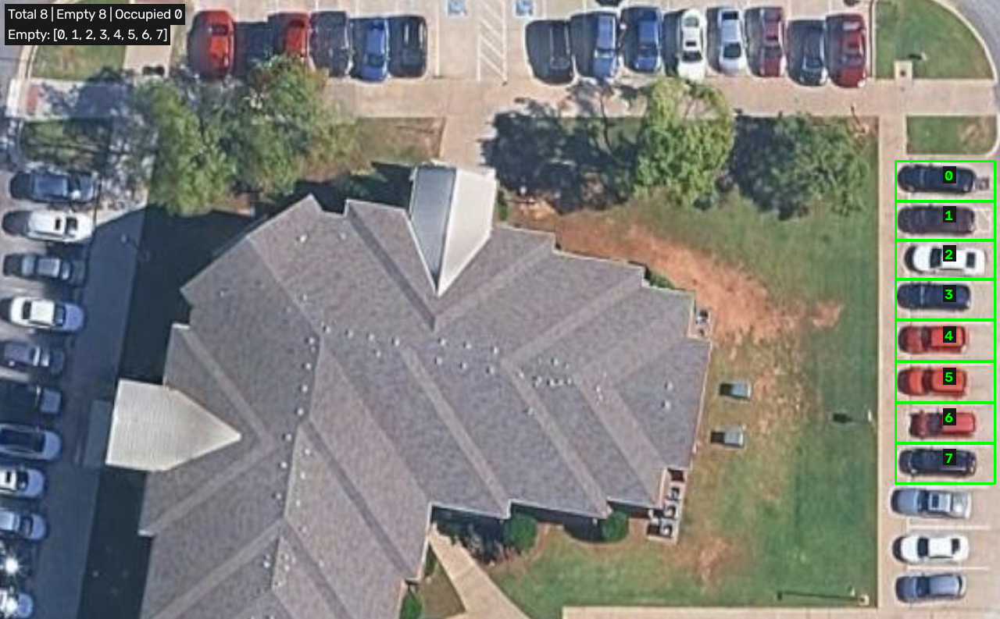

Image 1
스크린샷 2026-09-08 오후 2.31.02.png
Calendar screenshot: negative control. No parking bays annotated; 0 vehicles detected.

YOLO11s · confidence 0.25 · vehicle classes 2, 3, 5, 7 · width 1280 · CPU · vote 1
All six parking images returned zero vehicle detections. Green polygons are the program's predictions and include false empty results. Polygons cover manually selected visible bays, not every bay in the lot. The calendar image is a negative control.
스크린샷 2026-09-14 오후 11.06.15.png
Selected bays: 8. Visually occupied: 5. Predicted occupied: 0. False-empty bays: [0, 1, 3, 4, 6].

스크린샷 2026-09-14 오후 11.06.50.png
Selected bays: 12. Visually occupied: 5. Predicted occupied: 0. False-empty bays: [0, 1, 3, 7, 9].

스크린샷 2026-09-14 오후 11.07.23.png
Selected bays: 10. Visually occupied: 5. Predicted occupied: 0. False-empty bays: [0, 2, 4, 5, 6].

스크린샷 2026-09-14 오후 11.07.45.png
Selected bays: 10. Visually occupied: 5. Predicted occupied: 0. False-empty bays: [0, 1, 3, 4, 7].

스크린샷 2026-09-14 오후 11.08.09.png
Selected bays: 8. Visually occupied: 7. Predicted occupied: 0. False-empty bays: [0, 2, 3, 4, 5, 6, 7].

스크린샷 2026-09-14 오후 11.08.27.png
Selected bays: 8. Visually occupied: 8. Predicted occupied: 0. False-empty bays: [0, 1, 2, 3, 4, 5, 6, 7].

스크린샷 2026-09-08 오후 2.31.02.png
Calendar screenshot: negative control. No parking bays annotated; 0 vehicles detected.